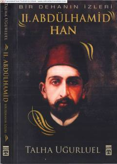

AXSulton Abdulhamid Xonning hayoti va Usmonli imperiyasi tarixi haqidagi tarixiy asar.
Mazkur kitob Usmonli imperiyasining taniqli hukmdorlaridan biri Sulton Abdulhamid Xonning hayoti, faoliyati va davri tarixi haqida hikoya qiladi. Talha Uğurluel qalamiga mansub ushbu asar turk tilidan tarjima qilingan bo'lib, tarixiy voqealar va shaxslar haqida qiziqarli ma'lumotlarni beradi. Kitobxonlar unda sultonning siyosati, saroy hayoti va o'sha davrdagi muhim voqealar bilan tanishishlari mumkin.